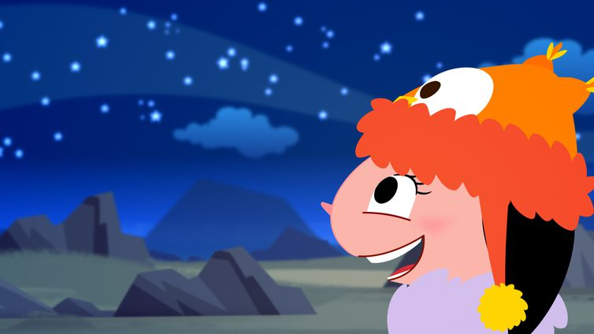

Confira 6 incríveis curiosidades sobre o espaço:
1. Não dá para pisar em Júpiter, Saturno, Urano e Netuno
Esses quatro planetas são gasosos, ou seja, não possuem uma superfície sólida. Dessa maneira, nossos astronautas precisariam desenvolver formas diferentes de explorar esses mundos.
2. Ao redor da Terra há muito lixo espacial
É comum que missões espaciais deixem resíduos no espaço. De ferramentas perdidas a partes das próprias naves, muito desse lixo acaba orbitando o planeta Terra. Estima-se que haja mais ou menos 500.000 objetos considerados lixo espacial.
3. Há mais estrelas no universo do que grãos de areia em todas as praias da Terra
Não se sabe o número exato de nenhuma dessas duas coisas, mas astrônomos fazem o seguinte cálculo: nossa galáxia, a Via Láctea, tem de 200 a 400 bilhões de estrelas. Já o número de galáxias existentes pode chegar a bilhões. Assim, a quantidade de estrelas que pode existir é quase infinita.

4. A Lua já foi parte da Terra
A teoria mais aceita sobre a origem da Lua é isso mesmo. Quando a Terra ainda era um planeta jovem, um objeto com pelo menos o tamanho de Marte colidiu com ela. Com isso, um pedaço do planeta se desprendeu mas não se afastou por completo. Milhões de anos depois, esse pedaço é conhecido por nós como Lua.
5. O planeta mais quente do nosso Sistema Solar é Vênus
Apesar de Mercúrio ser o planeta mais próximo do Sol, é Vênus que possui a atmosfera mais quente.
É uma média impressionante de 450° C.
6. O maior vulcão do Sistema Solar fica em Marte
Marte pode ser um dos menores planetas do nosso Sistema Solar, mas possui um vulcão de impressionantes 21km de altura. Chamado Monte Olimpo, esse vulcão por muito pouco não é também a maior montanha do Sistema Solar. Esse recorde é de 22km e pertence à montanha central da cratera Rheasilvia, no asteróide Vesta.
fonte: